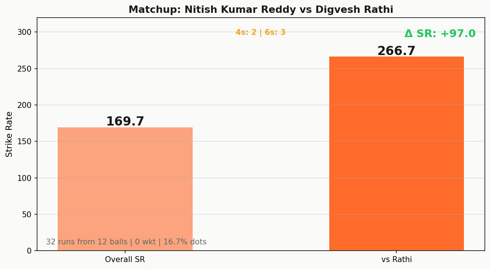
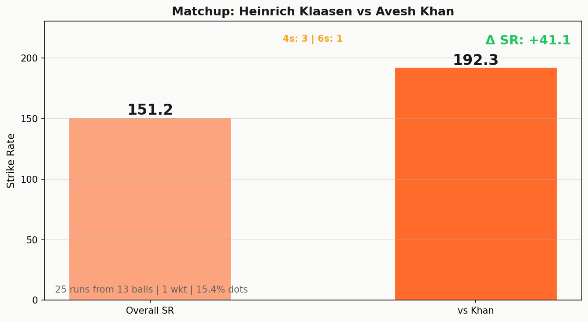
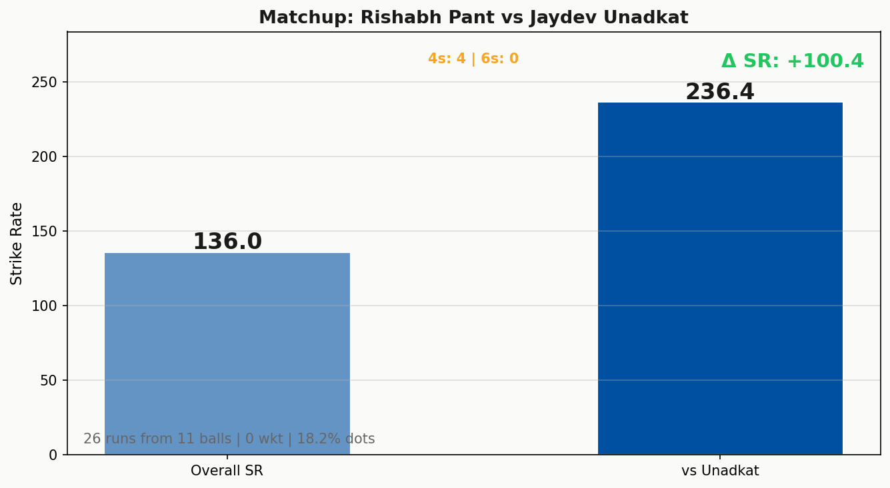
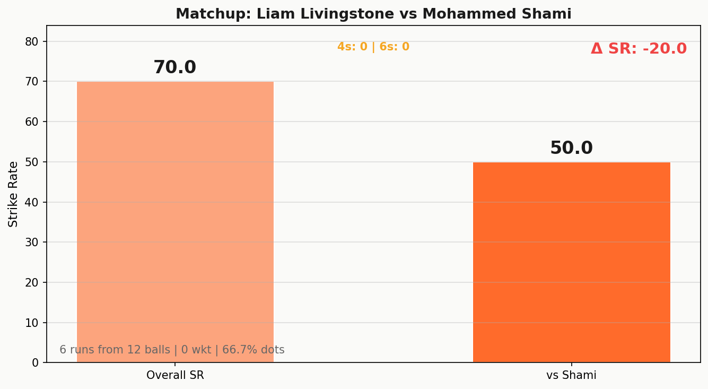
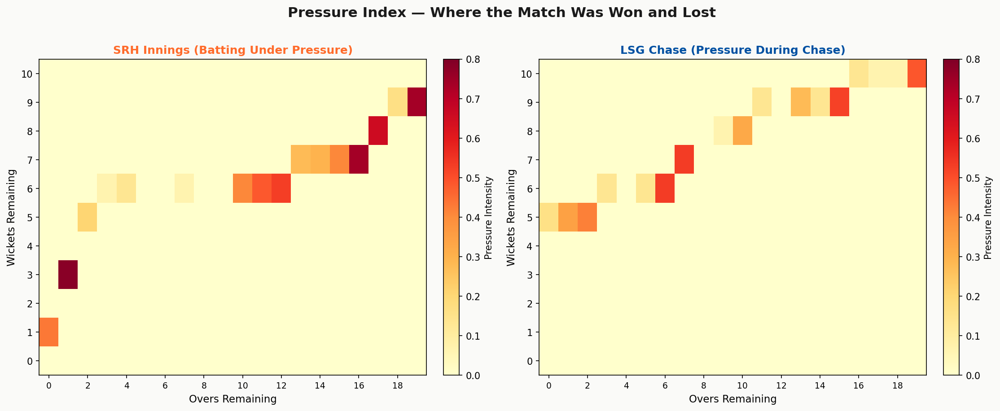
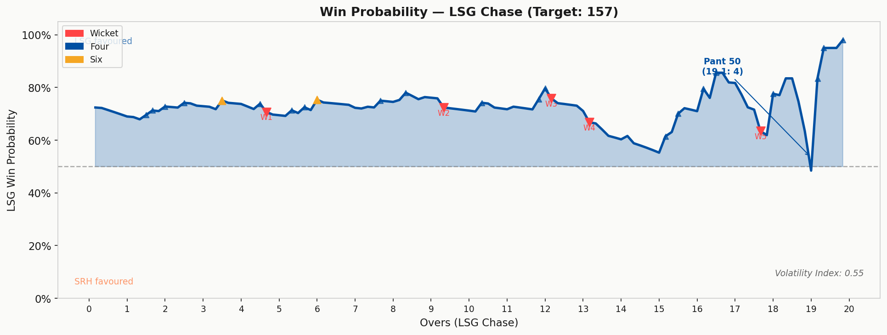
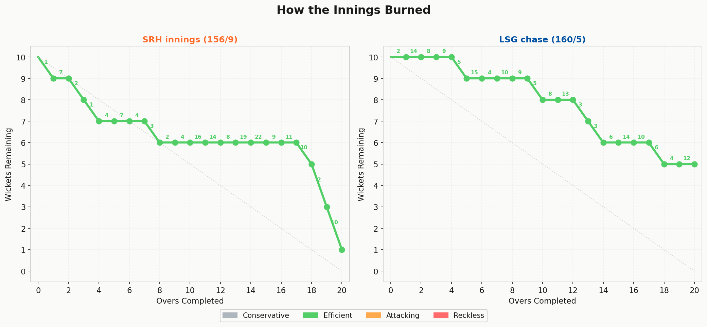
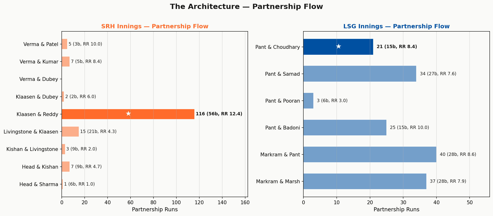

How SRH rebuilt from 26/4 to 156 — and why it still wasn't enough
notebooklm/ folder. Upload all 10 source files to NotebookLM to generate the full audio discussion. Topics: Shami's historic economy, the Klaasen-Reddy rescue, Pant's zero-six fifty, and SRH's record-setting first-to-last-over ratio.
A 5 out of 10 is the honest verdict. This match never lived in the knife-edge territory that sends blood pressure spiralling — for most of the chase, LSG were either comfortably ahead or in controlled distress. What earns the full two points for last-over drama is simple: Rishabh Pant, needing 13 from the final over, finding the boundary with one ball to spare. That's a cinema finish grafted onto what had been a fairly procedural afternoon.
The wicket cluster points are earned by SRH's implosion: four wickets in 7.1 overs, including three in the powerplay. This match's real drama lived entirely in overs 11 through 18, when Klaasen and Reddy conjured 116 runs from a position most teams would write off. That partnership is the story of this game. Everything else is context.
A 16.4-point gap separates winner from loser, and the gap is justified. LSG's bowling was historically good — a 15/15 full score on Wicket Punch tells you they took wickets throughout, not just in clusters. Their 10/10 on Dot Dominance reflects a bowling attack that made SRH work for every run, even as Klaasen and Reddy eventually overpowered them.
SRH's batting score of 19.3 out of 50 is brutal, and misleading. The Boundary Efficiency max score (15/15) shows they hit plenty of fours and sixes — just that the first 10 overs were so dreadful (35 runs) that the overall weighted strike rate barely climbs above the 120 baseline. The Extras Discipline score of 2.5/10 reflects three wides conceded, which matters more than it looks when you're defending 157.

Reddy's SR against Rathi vs his overall innings SR — a 97-point gulf
Thirty-two runs from 12 balls. A strike rate of 266.7. Three sixes against a single bowler. Digvesh Rathi's four-over spell cost 46 runs at an economy of 11.50 — and Nitish Kumar Reddy was the reason why.
Rathi bowled his first over in the sixth, when SRH were teetering at 22/3. He gave 7. Then he came back in the 12th over, by which point Klaasen and Reddy had already begun their rescue act, and something had changed in Reddy's approach. The premeditation was gone. He was reading the ball early and just hitting. Rathi's wristy, flighty leg-spin — the type that draws false shots from batsmen trying to guess — found no purchase against someone who had stopped guessing entirely.
The tactical question LSG never answered: why did Rathi bowl the 12th, 14th, and 16th overs, the exact phase where Reddy was at his most destructive? Four overs with a boundary in 7 of 12 balls from this matchup feels less like misfortune and more like a plan that existed only in theory.

192.3 SR from Klaasen against Avesh — until the reverse lap went wrong
Twenty-five runs from 13 balls, SR 192.3. Klaasen dominated Avesh Khan in the middle overs the way a left-hand-right-hand combination is supposed to work — he milked the angle, hit the length ball through mid-wicket, and kept the pressure on. Then at 18.1, having shaped to play the reverse lap before Avesh had even released the ball, Klaasen executed the premeditation too slowly. The ball was full around off. He lobbed it straight to Pant's right. Pant dived, collected.
Avesh's patience was the story here, not his wicket count. He stuck to the plan — full, angled in — and waited. Klaasen had been averaging north of 200 against him in the partnership. The last ball of their head-to-head shifted the balance completely: Avesh's 2/36 from 4 overs actually underrepresents what he was being asked to do and how well he did it until the 18th over.

Pant's SR of 236.4 against Unadkat — the match's decisive exploitation
Twenty-six runs from 11 balls. The winning boundary in over 20. Jaydev Unadkat was SRH's bowling problem articulated most clearly — a left-arm seamer whose back-of-a-length deliveries swung just enough to be awkward in theory but sat up just enough in practice that Pant treated them as net balls.
Unadkat's 3.5-over spell cost 50 runs at an economy of 13.04. Only 6 dots from 23 legal balls. Pant's 9 fours — and notably, zero sixes — tell you something about how this innings was constructed. He wasn't slogging. He was placing. Unadkat's full deliveries outside off were wide enough and full enough that Pant simply drove them into the gap or mid-off region without needing to go aerial. The winning shot — one knee down, bat nearly horizontal, slapping it over mid-off — was almost insolently controlled.

Six runs from 12 balls — Shami's mastery reduces Livingstone to a spectator
Six runs from 12 balls. A strike rate of 50. Eight dot balls. Against Liam Livingstone, a player whose entire value proposition in T20 cricket is that he makes bowlers regret their lengths. Shami made him regret turning up.
The mechanics: Shami came in and immediately bowled at 118–122kph, a full 15–18kph below his maximum. Scrambled seams. Slight angles across. Livingstone, one of the best readers of pace change in the game, simply could not pick it — in part because Shami was doing something he rarely does: using the slower ball as his primary, not secondary, weapon. Livingstone's dismissal at 7.1 — top-edging a lap sweep off a ball that popped off his shoulder onto Pant's glove — was almost deserved.
Shami bowled his four overs across two spells: overs 1-2, then again in overs 5-6. He conceded 9 runs total. Economy 2.25. For context: that is the economy of a Test-match seamer on a green pitch.

Pressure Index heatmap — darker cells indicate extreme pressure concentration in resource-space
The slip was just removed. Siddharth at short third. Shami bowled a slower ball outside off — the delivery he'd spend the whole evening making look like his stock ball. Abhishek drove, got the outside edge, and Siddharth dived to his right, catching it an inch off the grass. One ball in. One wicket down. The match's trajectory was set in the first legal delivery.
What makes the 116-run partnership extraordinary is not the volume — it's the context. SRH had scored 35 in 10 overs. The Klaasen-Reddy stand added 107 in 7 overs before that, and 116 in total across 56 deliveries. The third-highest first-to-last 10-over run ratio in T20 history (3.457: 35 in the first half, 121 in the second) was born entirely in this partnership.
The partnership that looked like it would push SRH to 170 ended at 18.1. Then five wickets fell in 18 balls — Klaasen (18.1), Dubey (18.2), Shivang (19.3), run-out (19.6) — leaving the final score at 156/9. SRH left at least 15 runs on the table. LSG knew it.

Ball-by-ball win probability for LSG's chase. The final over's swing is visible on the right edge.
Ball 114. Over 19.1. Unadkat to Pant. Four runs. Win probability leap: +35 percentage points.
LSG needed 13 from 6 balls. Mukul Choudhary at the other end had scored 2 off 5 balls — a passenger, not a partner. Pant needed to do this mostly himself. Unadkat came in wide and full. Pant drove through the off side. Four. 9 from 5. Then another four off the next ball. 5 from 4. LSG won the next ball after that — the third of the over — when Choudhary reviewed a caught behind decision and got it overturned. They ran two.
At that point, needing 3 from 2 balls, with Pant on strike, SRH had nothing. Pant hit the winning boundary with one ball remaining. The match was decided not at the fall of a wicket or the end of an over, but in a single wide, full ball that Pant deposited over mid-off.
Mohammed Shami bowled overs 1, 2, 5, and 6. He conceded 1, 7, 0, and 1 run respectively. Economy 2.25. Strike rate 12. Dots: 18 of 24 deliveries. Two wickets. One wide.
In over 1, he took Abhishek Sharma with the very first ball — an outside edge off a slower ball angled across. In over 2, he got Travis Head with the same delivery blueprint: scrambled seam at 121kph, short of a length on off, Head pushing forward without the bottom hand and popping it to Markram at mid-off, who dived low and forward. Twenty-one dots in his first three overs. Then Shami bowled overs 5 and 6 — just 1 run conceded.
The tactical pivot is what makes this exceptional: Shami is a swing bowler. His stock deliveries in most T20 matches are 135–140kph inducers and outducers. Here, he reprogrammed. Slower balls as the primary weapon. Scrambled seams. No conventional swing at all. Against a batting lineup that destroys pace, he brought a different pace entirely. SRH were 22/3 in the powerplay — the lowest powerplay score they'd recorded against LSG in two seasons — and it was almost entirely Shami's doing.
"'Swinging Shami' turns 'slower-ball Shami' to rewrite T20 fast bowling playbook" — ESPNcricinfo match report headline
He was then subbed out as LSG's impact player at 11.6 overs of SRH's innings, replaced by Ayush Badoni for the batting innings. Shami came in at No. 4 in the chase and scored 0 — but the 4 overs he'd already bowled were worth three times any contribution he'd have made with the bat.
Twelve runs saved from Rathi's spell alone — and those 12 runs matter. With a target of 145 instead of 157, LSG's powerplay 53/1 puts them 8 runs ahead of par before the seventh over. The pressure on Pant and Markram evaporates. The chase becomes a procession. The final-over drama never exists. Nitish Kumar Reddy's 56 still happens, but with nothing to defend, it becomes a footnote rather than a headline. The margin of victory becomes 8 wickets with 4 overs remaining. This is what one spinner conceding 12 extra runs can do in a 4-run game: erase all of its drama.
Remove Shami's spell and substitute an average powerplay bowler — say, a fifth option who averages 8.5 RPO in the powerplay. SRH score 40/1 instead of 22/3. Head and Abhishek bat through to over 6. The Klaasen-Reddy partnership still happens, but from a base of 70-odd rather than 26. Final SRH score: 175-180. Now LSG need 176. Markram's 45 off 27 gets them to 53/1 at the powerplay — but 120+ off the remaining 84 balls, with 4 wickets falling in overs 9-13, is a different proposition entirely. LSG win probability at the midpoint drops from 72% to roughly 40%. Two wickets at 2.25 RPO across 4 overs. That's what an impact player substitution is supposed to deliver.
| Metric | Value | Context |
|---|---|---|
| SRH first 10 overs | 35 runs | 3 wickets, RR 3.5 |
| SRH last 10 overs | 121 runs | 6 wickets, RR 12.1 |
| First:last 10-over ratio | 3.457 | 3rd highest in T20 history (130+ total) |
| Klaasen-Reddy 5th wkt stand | 116 off 56b | RR 12.43 from position 26/4 |
| Shami economy | 2.25 | 18 dots in 24 balls (75% dot rate) |
| LSG powerplay | 53/1 in 6 ov | Best of IPL 2026 season to that point |
| SRH powerplay | 22/3 in 6 ov | 3 wkts, including 2 to Shami |
| Pant innings | 68* (50b) | 9 fours, 0 sixes — unusual profile for Pant |
| Unadkat economy | 13.04 | 50 runs in 3.5 overs; SRH's bowling weak link |
| Margin of victory | 5 wkts, 1 ball | Pant boundary in over 20 to seal it |

The path through resource-space: overs completed vs wickets remaining. Phase colour indicates approach per over.
SRH's Burn Rate chart is two completely different innings stitched together at the equator. The left panel — the first 10 overs — shows a team burning Conservative through every single one: 1, 7, 2, 1, 4, 7, 4, 3, 2, 4. Ten overs. Zero attacking overs. In a format that demands 8+ from over 11 onward just to reach a competitive total. The path through resource-space shows a team barely moving on the horizontal axis while hemorrhaging wickets.
Then the right panel: overs 11 through 17 register as Attacking, with over 15 (22 runs) classified Reckless by rate alone. What saved SRH was that over 15's 22 runs came with wickets remaining — Klaasen and Reddy were still batting. The Reckless classification in overs 18 and 20 tells the tail story: boundaries hit but wickets lost faster than runs could compensate.
LSG's chase is almost textbook. Conservative in over 1 (Dubey was tight), then Attacking through the powerplay, then a controlled dip in the middle overs where 3 wickets fell, then Attacking again in the death as Pant found his range against Unadkat. The final over classified Attacking with 12 runs — exactly what was needed.

Partnership architecture: bar width = runs, annotation = balls and run rate. ★ marks load-bearing partnerships.
SRH's partnership architecture is a barbell: catastrophic at the top, extraordinary in the middle, catastrophic at the end. Four partnerships of 1, 7, 3, and 15 runs gave way to a load-bearing 116-run fifth-wicket stand between Klaasen and Reddy — 116 runs that represented 74% of SRH's total. Without it, SRH finish somewhere between 80 and 100. With it, they finish 156.
LSG's architecture is more balanced: three partnerships in the 25-40 range (Markram-Marsh 37, Markram-Pant 40, Pant-Samad 34), then the load-bearing final stand of Pant-Choudhary adding 21 from 15 balls to see it home. The 37-run opening stand gave LSG the platform; the 21-run last stand gave them the match. In between, Pant was the constant — batting through every partnership, never the man dismissed.
Set the match on its axis before over 7. SRH were 26/4 in 7.1 overs; without Shami's slower-ball masterclass, they likely post 40-45/2 and reach 170+. The impact sub decision to use him in the powerplay was the single best tactical call of the match. Won LSG the game in overs 1-6.
The innings that made 156 more than a formality. From 26/4, Reddy treated the match as a franchise he had to rebuild from scratch. Five sixes against four bowlers. His decimation of Rathi (32 from 12 balls) was the partnership's accelerant. Without Reddy, SRH post 110 and LSG win in 12 overs.
The methodical anchor where everyone expected the adventurer. Fifty balls. Nine fours. Zero sixes. Every boundary was placed, not muscled. Pant batted through the collapse of four wickets (overs 9-13) without being rattled, then held his nerve to win it with one ball remaining. This was leadership through batting, not through noise.
More controlled than Reddy's 56, but equally load-bearing. Klaasen rotated strike intelligently throughout the partnership — keeping Reddy on strike against the weaker bowlers, then accelerating himself against Avesh and Prince in the 14th-17th overs. His dismissal at 18.1 triggered the collapse that cost SRH 15-20 runs.